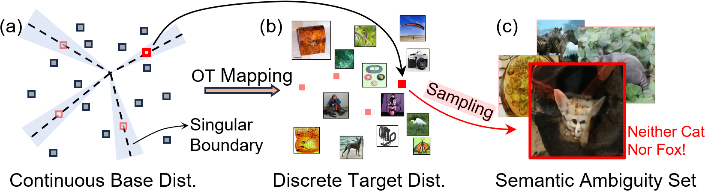
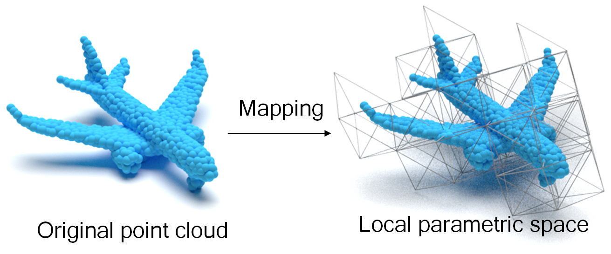
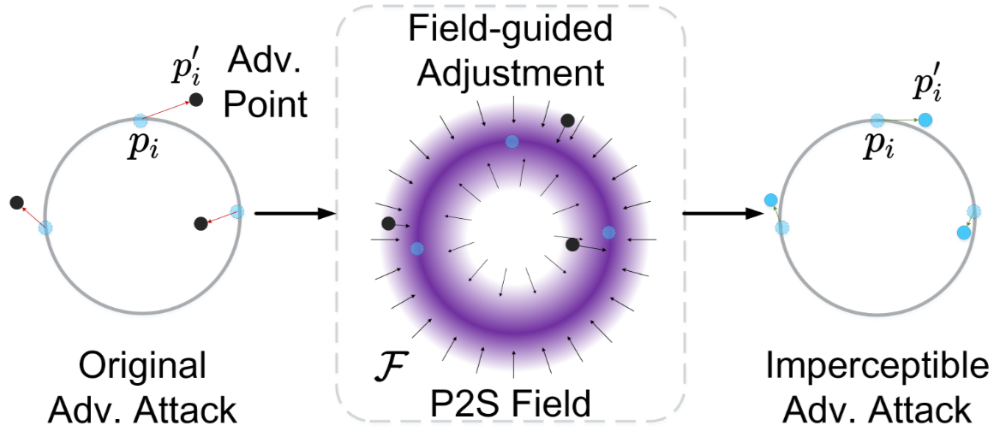

M.S. Student in Artificial Intelligence, Guangzhou University, Academician Binxing Fang's Experimental Class
Advisor: Prof. Keke Tang (唐可可)
Find More about Ziyong: Google Scholar
I completed my undergraduate studies at Gannan Normal University Under the guidance of Prof. Lixin Guan (管立新) and Assoc. Prof. Qi Zhong (钟琦), I received systematic training in pattern recognition and artificial intelligence. During this period, I actively participated in interdisciplinary research projects involving data analysis and intelligent systems. My efforts in these areas led to two national-level awards and the registration of five software copyrights.
I am currently pursuing my Master’s degree under the supervision of Prof. Keke Tang (唐可可). My recent research focuses on Trustworthy AI (可信人工智能) and its practical applications. To date, my research work has been published in several top-tier international conferences, including ICLR, AAAI, and ICASSP.

Optimal Transport-Induced Samples against Out-of-Distribution Overconfidence
International Conference on Learning Representations (ICLR), 2026
(CCF A类，人工智能顶会)[PDF]

Imperceptible 3D Point Cloud Attacks on Lattice-based Barycentric Coordinates
AAAI Conference on Artificial Intelligence (AAAI), 2025
(CCF A类，人工智能顶会)[PDF]

Imperceptible Adversarial Attacks on Point Clouds Guided by Point-to-Surface Field
International Conference on Acoustics, Speech, and Signal Processing (ICASSP), 2025
[PDF]
My research interests fall into the areas of robotics, computer vision and computer graphics, including: